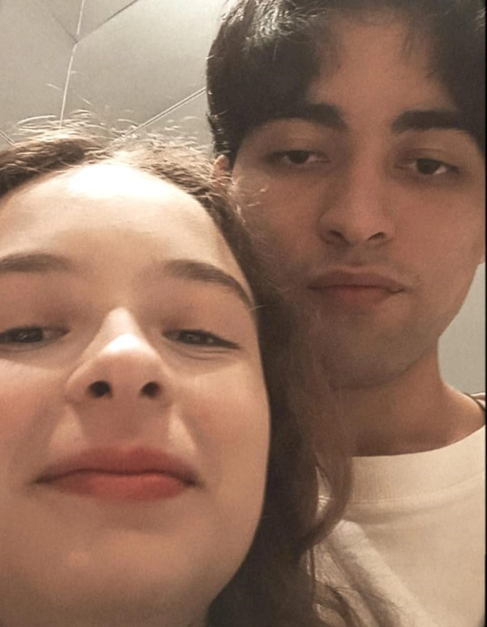
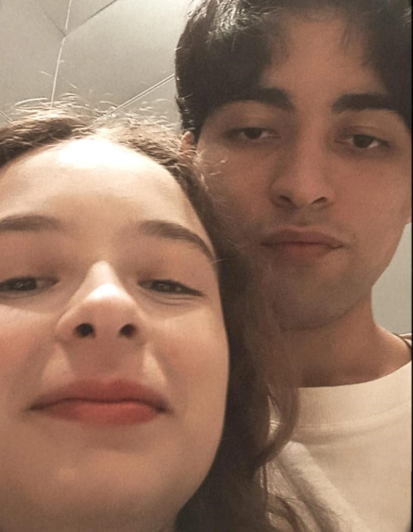
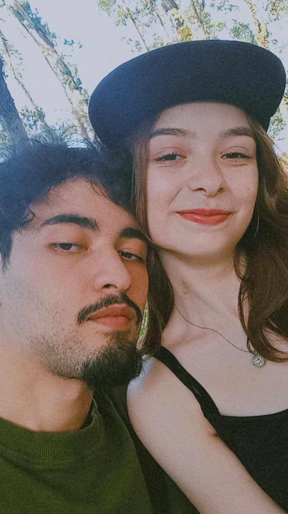
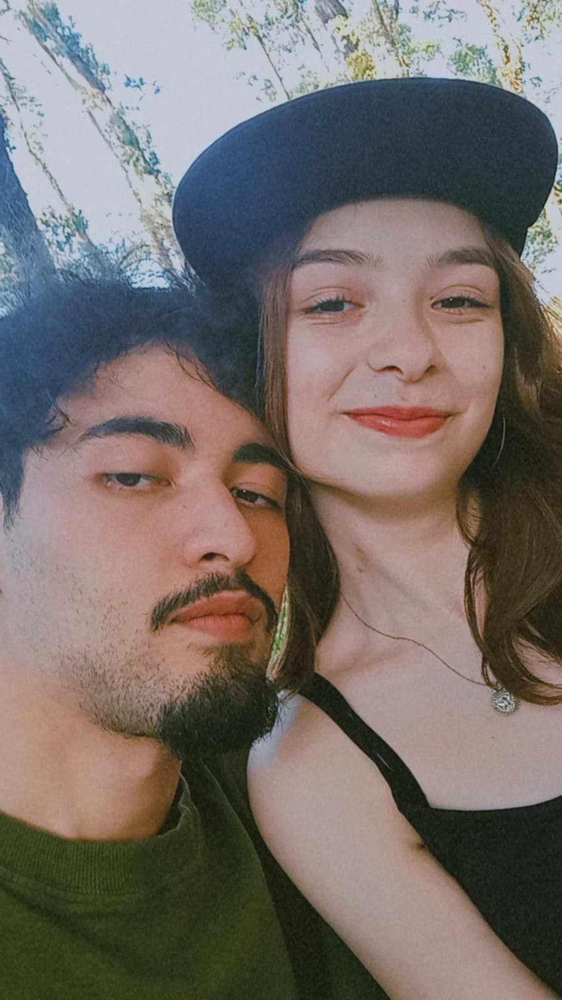

Titi e Teté


 

 

"É você
Só você
Que na vida vai comigo agora"
📅 19/10/2024
Você é MUITO especial para mim!
365 dias, 8.760 horas e 525.600 minutos.
Isso é 1 ano ao seu lado.
“E eu escolheria você; em cem vidas, em cem mundos, em qualquer versão da realidade, eu encontraria você e escolheria você.”
Eu sou completamente apaixonado por você e por tudo que diz respeito a você. Eu respiro você, eu vivo você e agradeço todos os dias a Deus por você estar aqui, me trazendo sempre a oportunidade de ser cada vez melhor por mim e por você. Você faz eu me sentir bem. Faz eu me sentir vivo. Eu agradeço imensamente por conseguir ser o homem que você queria que eu fosse, e eu espero que você sempre acredite: Você tem todo o meu coração.
Existem tantas coisas que eu poderia dizer, mas tenho certeza de que sairia tudo errado. Não sei se até o fim de nossas vidas eu vá conseguir expressar com precisão o que eu sinto por você, mas sei que passarei uma vida inteira tentando te mostrar como me sinto e tentando fazer você se sentir como eu.
Você é a mulher mais incrível desse mundo. Amo sua força, seu jeito. Amo tudo que você é e o que está se tornando. Você me faz ver o mundo de uma forma que eu não era capaz, e me mostrou mais do que eu já conhecia. Você me deu cor, me deu vida. Você me inspira. Você é tudo que sempre pedi pra Deus, em orações e pedidos de aniversário. Se eu tivesse que imaginar alguém, seria assim como você: perfeita para mim. Obrigado por estar aqui. Obrigado por me amar e por se permitir ser amada por mim. Sei que as vezes batemos na casca um do outro, mas estamos progredindo muito juntos. Que venham mais vários anos ao seu lado, que você continue sendo essa mulher incrível e continue fazendo parte dessa jornada comigo, pois nem mesmo uma vida inteira seria o suficiente ao seu lado, para entender de fato o que é te amar: eu apenas sinto, e espero sentir para todo o sempre.
"A pessoa que eu amo vive nesse mundo, não há nada triste, afinal"
Eu tenho muita sorte de estar no mesmo ano e na mesma realidade que você. Tenho sorte de ter nascido onde poderia te conhecer. Tenho sorte de você estar aqui, e sei que se não estivesse eu passaria minha existência inteira te procurando.
Tudo era incompleto antes de você. Nada fazia sentido antes de você. Agora eu vejo isso. Eu precisava de você.
Sinto borboletas na barriga sempre que te vejo, mesmo depois de todo esse tempo. Espero me sentir assim para sempre: quero me sentir assim para sempre. Apenas nós dois.
"É você
Só você
Que invadiu o centro do espelho
Nós dois na biblioteca e no saguão
Ninguém mais"
Eu não preciso de mais ninguém. Você é a única pra todo o sempre. Sempre será você!
Eles dizem que o amor é para sempre
Seu para sempre é tudo que eu preciso
Por favor, fique o tempo que precisar
Não posso prometer que as coisas não serão quebradas
Mas eu juro que nunca irei embora
Que Deus abençoe nossa relação e que possamos dividir a vida inteira juntos, se for de sua vontade. Espero de verdade que ele venha ao nosso encontro... Quero estar com você até o meu último suspiro e quero viver muita coisa com você ainda.
Eu amo estar com você. Amo dividir a vida com você e espero fazer isso por mais um milhão de anos!